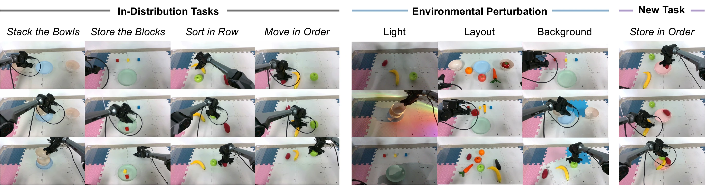
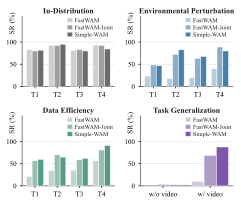
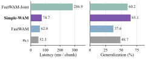

LIBERO-Plus
Seven perturbation factors: robot initialization, camera viewpoint, language, sensor noise, background, object layout, and lighting.
TL;DR: Future conditioning, rather than clean future generation, is what makes World Action Models generalize. Simple-WAM uses a single pass over fully noised future tokens, achieving stronger generalization across simulation and real-world tasks while retaining efficiency comparable to Latent WAMs.
World action models (WAMs) predict the future alongside actions during training. Due to the heavy computation cost of video denoising, whether the future must still be generated during inference is disputed: Explicit WAMs denoise it into clean frames along with every action chunk, whereas Latent WAMs discard it entirely for acceleration.
We find that latent WAMs, despite matching explicit ones on in-distribution tasks, fail to retain the generalization benefits that originally motivated WAMs. To demonstrate this, we evaluate generalization along three axes: environmental perturbation, data efficiency, and task generalization. Controlled comparisons with a matched backbone, training data, and budget reveal consistent degradation across all three axes when the action expert no longer conditions on future representations. Further analysis shows that the gap arises almost entirely from the first denoising step: the benefit comes from preparing the future, not generating it.
We therefore propose Simple-WAM, which simplifies future modeling into a single forward pass of fully noised video tokens and adapts the training-time noise schedule to this inference behavior. Across simulation and real-world tasks, Simple-WAM achieves the best of both worlds, leading explicit WAMs in generalization performance with efficiency comparable to Latent WAMs.
Seven perturbation factors: robot initialization, camera viewpoint, language, sensor noise, background, object layout, and lighting.
Data efficiency at 5 and 10 demonstrations per task, and task generalization with and without action-free video.
Bimanual manipulation under 10-shot learning and held-out tasks, with held-out settings matching LIBERO.

| Method | Environmental Perturbation | Data Efficiency | Task Generalization | |||||
|---|---|---|---|---|---|---|---|---|
| LIBERO-PlusAverage | LIBERO5-Shot | LIBERO10-Shot | RoboTwin10-Shot | LIBEROw/o Video | LIBEROw/ Video | RoboTwinw/o Video | RoboTwinw/ Video | |
| FastWAM | 53.8 | 78.2 | 88.5 | 4.8 | 2.1 | 5.9 | 3.5 | 4.8 |
| FastWAM-Joint | 67.7 | 91.5 | 97.0 | 35.0 | 6.3 | 69.9 | 5.4 | 47.3 |
| Simple-WAM | 79.5 | 92.4 | 97.2 | 37.2 | 10.1 | 73.6 | 6.2 | 44.5 |


Unseen TaskPick Up the Object and Place It onto the Plate
@misc{zhou2026makesworldactionmodels,
title={What Makes World Action Models Generalize? An Empirical Study of Test-Time Future Modeling},
author={Renping Zhou and Zanlin Ni and Zihao Fan and Guohao Fu and Zeyu Liu and Hao Shi and Jie Zhang and Chi Bene Chen and Yang Yue and Xueyang Fu and Gao Huang},
year={2026},
eprint={2609.34981},
archivePrefix={arXiv},
primaryClass={cs.CV},
url={https://arxiv.org/abs/2609.34981},
}